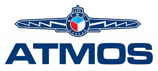
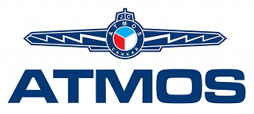

Krátce o naší firmě
Jsme převážně rodinná, projekční, topenářská a servisní firma, skompletní strukturou, působící na trhu již od roku 1990. Naše zkušenosti voboru již přesahují 40 let. Sídlo naší společnosti je v Rakovníku.
Klademe důraz na odbornost. Součástí našeho týmu jsou projektant, topenáři, servisní technik, elektrikář (MAR) a revizní technik. Zakázky zajišťujeme od návrhu vhodné koncepce, projektu pro provádění stavby, po montáž a servis v širokém okolí Rakovníka, ale po dohodě dokážeme zakázky realizovat i v celé České republice a zahraničí.
Zabýváme se vytápěním, regulací, rozvody plynu, výpočty spalinových cest a okrajově také zdravotechnikou, větráním a chlazením. Provádíme opravy kotelen a drobné opravy. Naší cílovou skupinou jsou rodinné domy, bytové domy a průmyslové areály.
Při realizaci zakázek upřednostňujeme české výrobce, mezi naše nejvýznamnější obchodní partnery patří například firmy ATMOS, THERMONA, AGROMECHANIKA LHENICE, BENEKOV, LING Krnov, PANASONIC a další. Vroce 2014 byla naše společnost vyhlášena vítězem soutěže „O nejlepší kotelnu skotlem ATMOS vČeské republice a na Slovensku“.
Na rozdíl například od automobilu, který je sériovým výrobkem, jehož technické řešení je jednou navržené týmem inženýrů specialistů a opakuje se ve velkých sériích, je každá kotelna a topná soustava na míru navrženým originálem, jehož technické řešení se neopakuje. Proto je oblast „malé energetiky“ specifickým, vysoce kreativním oborem, který sice pracuje s nízkými tepelnými výkony, nicméně vyžaduje rozsáhlé mezioborové teoretické znalosti.
Předmětem naší činnosti není primárně prodej výrobků, ale odborný návrh, montáž a servis unikátních zdrojů a rozvodů tepla, sunikátními vlastnostmi, navržených vždy na míru konkrétního objektu, podle požadavků konkrétního zákazníka. Při naší činnosti nejsme vázáni jednou konkrétní technologií, ani spoluprací s jedním konkrétním výrobcem, ale jen zájmem zákazníka a právními předpisy.
Naším cílem je přinášet naším zákazníkům řešení založená na odbornosti. V důsledku technického pokroku a turbulencím na trhu s energiemi se luxusním zbožím staly zejména na míru navržené, technicky pokročilé, ekologické a komfortní kotelny na pevná paliva, nezávislé na síťových energiích, kombinované s jinými automatickými zdroji energie.
Vsídle naší firmy v Rakovníku, provozujeme referenční kotelnu na pevná paliva a zemní plyn, s technologií ATMOS a THERMONA a referenční multisplitové tepelné čerpadlo PANASONIC typu vzduch / vzduch. Vrámci nezávazné prohlídky naší referenční kotelny uvidíte přímo vprovozu celý funkční technologický celek, provedený vnejvyšším vsoučasném době dostupném standardu.
V případě, že se rozhodujete, kterou firmu zvolit pro projekt a realizaci Vaší zakázky, nabízíme Vám prohlídku některé znašich realizovaných kotelen, abyste si sami mohli udělat nezávislý názor o kvalitě našich služeb.
 
